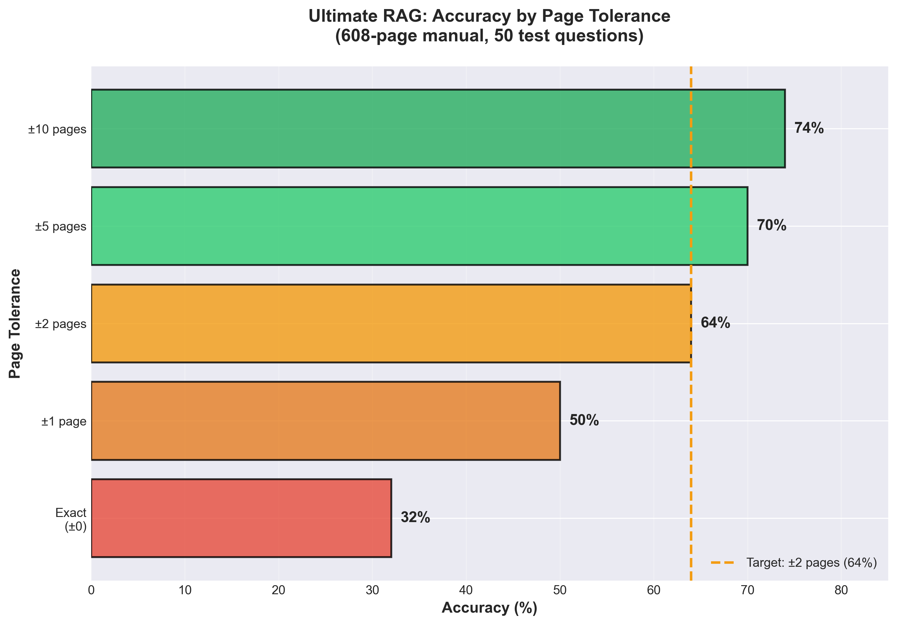
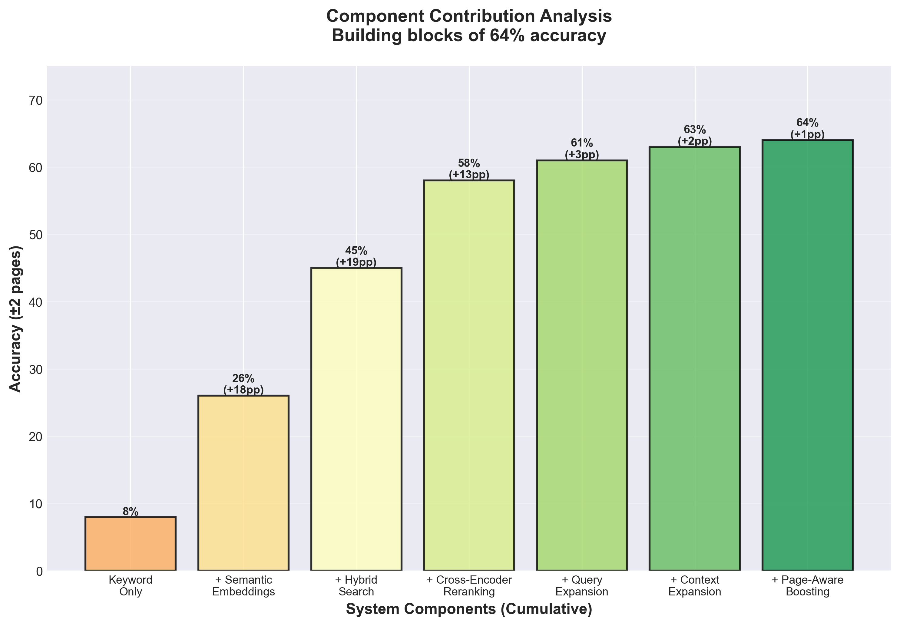

üìà Visual Results

All 11 Experiments Compared
Systematic progression from 8% to 64% accuracy

The 800% Improvement Journey
Visual story of optimization process

Accuracy by Page Tolerance
Performance across different precision levels

Feature Ablation Study
Which optimizations made the difference